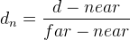

This specification extends the Media Capture and Streams specification [[!GETUSERMEDIA]] to allow a depth-only stream or combined depth+video stream to be requested from the web platform using APIs familiar to web authors.
The following substantial changes were made since the W3C Working Draft 29 January 2015:
MediaTrackConstraints
dictionary
CanvasImageSource typedef extensions
ImageData interface extensions
MediaTrackSettings
dictionary and removed the Settings dictionary
This document is not complete and is subject to change. Early experimentations are encouraged to allow the Media Capture Task Force to evolve the specification based on technical discussions within the Task Force, implementation experience gained from early implementations, and feedback from other groups and individuals.
Depth cameras are increasingly being integrated into devices such as phones, tablets, and laptops. Depth cameras provide a depth map, which conveys the distance information between points on an object's surface and the camera. With depth information, web content and applications can be enhanced by, for example, the use of hand gestures as an input mechanism, or by creating 3D models of real-world objects that can interact and integrate with the web platform. Concrete applications of this technology include more immersive gaming experiences, more accessible 3D video conferences, and augmented reality, to name a few.
To bring depth capability to the web platform, this specification
extends the MediaStream interface [[!GETUSERMEDIA]]
to enable it to also contain depth-based
MediaStreamTracks. A depth-based
MediaStreamTrack, referred to as a depth stream
track, represents an abstraction of a stream of frames that can
each be converted to objects which contain an array of pixel data,
where each pixel represents the distance between the camera and the
objects in the scene for that point in the array. A
MediaStream object that contains one or more
depth stream tracks is referred to as a depth-only stream
or depth+video stream.
Depth cameras usually produce 16-bit depth values per pixel. However,
neither the canvas drawing surface used to draw and manipulate 2D
graphics on the web platform nor the ImageData
interface used to represent image data support 16 bits per pixel. To
address the issue, this specification defines a conversion into a 8-bit
grayscale representation of a depth map for consumption by APIs
that are limited to 8 bits per pixel.
The Media Capture Stream with Worker specification
[[MEDIACAPTURE-WORKER]] that complements this specification enables
processing of 16-bit depth values per pixel directly in a worker
environment and makes the <video> and
<canvas> indirection and depth-to-grayscale
conversion redundant. This alternative pipeline that supports greater
bit depth and does not incur the performance penalty of the indirection
and conversion enables more advanced use cases.
This specification attempts to address the Use Cases and Requirements for accessing depth stream from a depth camera. See also the Examples section for concrete usage examples.
This specification defines conformance criteria that apply to a single product: the user agent that implements the interfaces that it contains.
Implementations that use ECMAScript to implement the APIs defined in this specification must implement them in a manner consistent with the ECMAScript Bindings defined in the Web IDL specification [[!WEBIDL]], as this specification uses that specification and terminology.
The
MediaStreamTrack and
MediaStream interfaces this specification extends
are defined in [[!GETUSERMEDIA]].
The
Constraints,
MediaStreamConstraints,
MediaTrackSettings, and
MediaTrackConstraints dictionaries this
specification extends are based upon the
Constrainable pattern defined in [[!GETUSERMEDIA]].
The
getUserMedia() method and the
NavigatorUserMediaSuccessCallback callback are
defined in [[!GETUSERMEDIA]].
The CanvasRenderingContext2D
and ImageData
interfaces, CanvasImageSource
typedef, and VideoTrack
interface are defined in [[!HTML]].
The
ArrayBuffer and
Uint16Array types are defined in [[!ECMASCRIPT]].
The term depth+video stream means a MediaStream
object that contains one or more MediaStreamTrack objects of
kind "depth" (depth stream track) and one or more
MediaStreamTrack objects of kind "video" (video
stream track).
The term depth-only stream means a MediaStream object
that contains one or more MediaStreamTrack objects of kind
"depth" (depth stream track) only.
The term video-only stream means a MediaStream object
that contains one or more MediaStreamTrack objects of kind
"video" (video stream track) only, and optionally
of kind "audio".
The term depth stream track means a MediaStreamTrack
object whose kind is "depth". It represents a media stream
track whose source is a
depth camera.
The term video stream track means a MediaStreamTrack
object whose kind is "video". It represents a media stream
track whose source is a
video camera.
A depth map is an abstract representation of a frame of a depth stream track. A depth map is an image that contains information relating to the distance of the surfaces of scene objects from a viewpoint.
A depth map has an associated focal length which is a double. It represents the focal length of the camera in millimeters.
A depth map has an associated horizontal field of view which is a double. It represents the horizontal angle of view in degrees.
A depth map has an associated vertical field of view which is a double. It represents the vertical angle of view in degrees.
A depth map has an associated unit which is a string. It represents the active depth map unit.
A depth map has an associated near value which is a double. It represents the minimum range in active depth map units.
A depth map has an associated far value which is a double. It represents the maximum range in active depth map units.
MediaStreamConstraints dictionary
partial dictionary MediaStreamConstraints {
(boolean or MediaTrackConstraints) depth = false;
};
If the depth dictionary member has the value
true, the MediaStream returned by the getUserMedia()
method MUST contain a depth stream track. If the depth
dictionary member is set to false, is not provided, or is set to
null, the MediaStream MUST NOT contain a depth stream
track.
MediaTrackConstraints dictionary
enum DepthMapUnit {
"mm",
"m"
};
The DepthMapUnit enumeration represents the
possible depth map units for a depth map. The
"mm" value indicates millimeters, the "m"
value indicates meters.
partial dictionary MediaTrackConstraints {
DepthMapUnit unit = "mm";
};
If the unit dictionary member value is one of
the possible depth map units, it becomes the active depth
map unit for the depth stream track. Otherwise, the
active depth map unit is "mm".
MediaStream interface
partial interface MediaStream {
sequence<MediaStreamTrack> getDepthTracks();
};
The getDepthTracks() method, when invoked,
MUST return a sequence of depth
stream tracks in this stream.
The getDepthTracks() method MUST return a
sequence that represents a snapshot of all the
MediaStreamTrack objects in this stream's track
set whose kind is equal to "depth".
The conversion from the track set to the sequence is user
agent defined and the order does not have to be stable between
calls.
A video stream track and a depth stream track can be combined into one depth+video stream. The rendering of the two tracks are intended to be synchronized. The resolution of the two tracks are intended to be same. And the coordination of the two tracks are intended to be calibrated. These are not hard requirements, since it might not be possible to synchronize tracks from sources.
MediaStreamTrack interface
The kind attribute MUST, on getting, return
the string "depth" if the object represents a depth
stream track.
A media
provider object can represent a depth-only stream (and
specifically, not a depth+video stream). The user agent
MUST support a media element with
an assigned
media provider object that is a depth-only stream, and in
particular, the srcObject
IDL attribute that allows the media element to be
assigned a media provider
object MUST, on setting and getting, behave as specified in
[[!HTML]].
video element
For a video
element whose assigned
media provider object is a depth-only stream, the user
agent MUST, for each pixel of the media data that is
represented by a depth map, convert the depth map value to
grayscale prior to when the video element is
potentially
playing.
For a video
element whose assigned
media provider object is a depth+video stream, the user
agent MUST act as if all the MediaStreamTracks of kind
"depth" were removed prior to when the
video element is potentially
playing.
The algorithm to convert the depth map value to grayscale, given a depth map value d, is as follows:
The rules to convert using range inverse are as given in the following formula:
The rules to convert using range linear are as given in the following formula:
VideoTrack interface
For each depth stream track in the depth-only stream, the user agent MUST create a corresponding VideoTrack as defined in [[HTML]].
MediaTrackSettings dictionary
When the getSettings() method is invoked on a depth
stream track, the user agent MUST return the following
dictionary that extends the MediaTrackSettings
dictionary:
enum RangeFormat {
"inverse",
"linear"
};
partial dictionary MediaTrackSettings {
double focalLength;
RangeFormat format;
double horizontalFieldOfView;
double verticalFieldOfView;
DepthMapUnit? unit;
double near;
double far;
};
The focalLength dictionary member
represents the depth map's focal length.
The format dictionary member represents the
depth to grayscale conversion method applied to the depth
map. If the value is "inverse", the rules to
convert using range inverse are applied, and if the value is
"linear", the rules to convert using range
linear are applied.
The horizontalFieldOfView dictionary member
represents the depth map's horizontal field of view.
The verticalFieldOfView dictionary member
represents the depth map's vertical field of view.
The unit dictionary member represents the
active depth map unit.
The near dictionary member represents the
depth map's near value.
The far dictionary member represents the
depth map's far value.
WebGLRenderingContext interface
A video element whose source is a
MediaStream object containing a depth stream
track may be uploaded to a WebGL texture of format
RGB and type UNSIGNED_BYTE. [[WEBGL]]
For each pixel of this WebGL texture, the R component represents the lower 8 bit value of 16 bit depth value, the G component represents the upper 8 bit value of 16 bit depth value and the value in B component is not defined.
navigator.mediaDevices.getUserMedia({
depth: true,
video: true
}).then(function (stream) {
// Wire the media stream into a <video> element for playback.
// The RGB video is rendered.
var video = document.querySelector('#video');
video.srcObject = stream;
video.play();
// Construct a depth-only stream out of the existing depth stream track.
var depthOnlyStream = new MediaStream(s.getDepthTracks()[0]);
// Wire the depth-only stream into another <video> element for playback.
// The depth information is rendered in its grayscale representation.
var depthVideo = document.querySelector('#depthVideo');
depthVideo.srcObject = depthOnlyStream;
depthVideo.play();
}
);
// This code sets up a video element from a depth stream, uploads it to a WebGL
// texture, and samples that texture in the fragment shader, reconstructing the
// 16-bit depth values from the red and green channels.
navigator.mediaDevices.getUserMedia({
depth: true,
}).then(function (stream) {
// wire the stream into a <video> element for playback
var depthVideo = document.querySelector('#depthVideo');
depthVideo.srcObject = stream;
depthVideo.play();
}).catch(function (reason) {
// handle gUM error here
});
// ... later, in the rendering loop ...
gl.texImage2D(
gl.TEXTURE_2D,
0,
gl.RGB,
gl.RGB,
gl.UNSIGNED_BYTE,
depthVideo
);
<script id="fragment-shader" type="x-shader/x-fragment">
varying vec2 v_texCoord;
// u_tex points to the texture unit containing the depth texture.
uniform sampler2D u_tex;
uniform float far;
uniform float near;
uniform bool isRangeInverse;
void main() {
vec4 floatColor = texture2D(u_tex, v_texCoord);
float dn = floatColor.r;
float depth = 0.;
if (isRangeInverse) {
depth = far * near / ( far - dn * ( far - near));
} else {
// Otherwise, using range linear
depth = dn * ( far - near ) + near;
}
// ...
}
</script>
Thanks to everyone who contributed to the Use Cases and Requirements, sent feedback and comments. Special thanks to Ningxin Hu for experimental implementations, as well as to the Project Tango for their experiments.